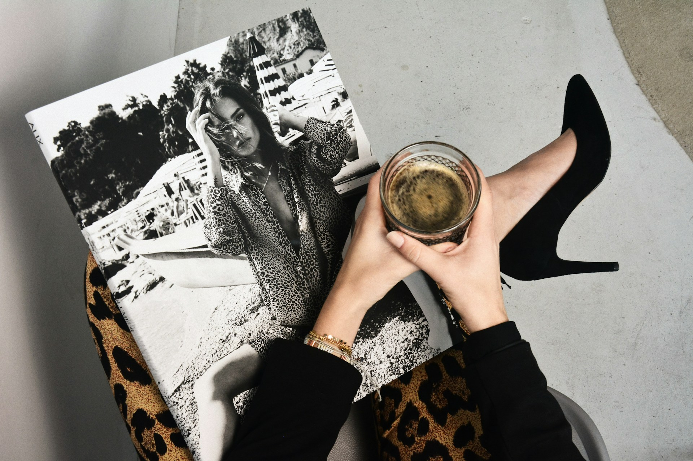

Fashion med mening:
Amani fortæller sin historie
Hvordan finder man egentlig inspiration til sin stil, og hvad betyder fashion i dag? I dette interview med Amani Mabonga dykker vi ned i personlige oplevelser, kreative processer og de små detaljer, der gør mode levende.
Læs med, når vi taler om autenticitet og hvor inspirationen kommer fra og få et ærligt indblik i, hvordan fashion både kan være identitet og selvudtryk.
Ugens inspiration
Inspiration er kernen i fashion og skaber grundlaget for både trends og personlig stil. Den kan opstå overalt i naturen, kunsten, rejser eller i hverdagens øjeblikke. Sociale medier som Instagram giver hurtig adgang til globale indtryk, mens street style viser, hvordan mennesker fortolker mode på unikke måder.
For designere bliver inspiration ofte til hele kollektioner, men også i hverdagen kan man hente idéer til at udvikle sin egen garderobe. Det handler om at kombinere forskellige elementer og skabe noget personligt. Inspiration gør fashion levende, konstant foranderligt og fuld af nye muligheder.
Fra show til street
Fra show til street handler om rejsen fra catwalkens spektakulære univers til hverdagsgadernes personlige udtryk. På runwayen ser vi ofte de mest dristige idéer, hvor farver, snit og materialer skubber til grænserne for, hvad fashion kan være. Når disse trends rammer gaden, bliver de fortolket på nye måder tilpasset individuelle stilarter og praktiske behov. Det er her, moden virkelig lever: i mødet mellem high fashion og street style. Fra show til street er transformationen, der gør mode tilgængelig, relevant og inspirerende for alle.